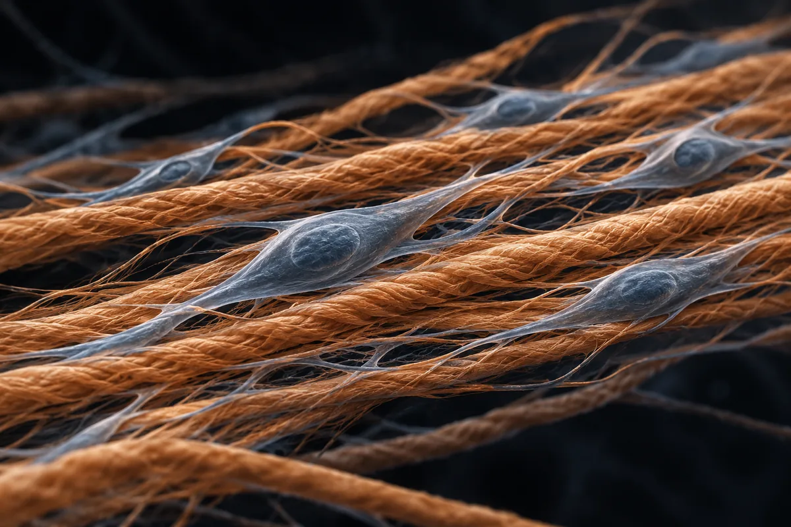

Tração peniana e aparelho de vácuo (e "soltar o ligamento suspensor")
Tração diária ganhou em média 1,3 a 2,3 cm em estudos com Peyronie, pós-prostatectomia e queixa de pênis curto; o vácuo não aumentou o tamanho. Os "2 a 5 cm" e o "37%" não estão em estudo.

Material experimental. Leia antes de usar qualquer coisa daqui.
Nada nesta página é recomendação médica, prescrição ou plano de tratamento. É uma tradução organizada de protocolos que circulam em comunidades de pesquisa e, quando existe, do que ensaios publicados testaram. As duas coisas estão marcadas de forma diferente — e não são equivalentes.
A maior parte dos compostos aqui não tem aprovação da ANVISA nem da FDA para uso humano. Vários são vendidos com rótulo de "uso exclusivo em pesquisa", o que significa que não passaram por controle de pureza, esterilidade ou dosagem para consumo por pessoas. Dose descrita por comunidade não é dose validada: é o que alguém relatou ter feito.
Converse com um profissional de saúde habilitado antes de considerar qualquer um destes compostos. Se você já usa algum e sentir algo fora do previsto, procure atendimento — não espere o próximo exame de rotina.
Resumo
A tração peniana tem estudos de verdade, mas quase todos em homens com doença de Peyronie ou depois de retirar a próstata, e com uso diário longo. Em homens com queixa de pênis curto, o ganho médio de comprimento esticado foi de 1,7 cm em 6 meses com 4 horas ou mais por dia, num estudo de Turim, e uma revisão sistemática resume os aparelhos de tração como ganho de menos de 2 cm no pênis flácido. O aparelho de vácuo, usado 20 minutos 3 vezes por semana por 6 meses, não mudou o comprimento. Cortar o ligamento suspensor deu, em média, 1,3 cm, com 35% de satisfação e casos de perda. A maioria dos homens que buscam aumento tem pênis de tamanho normal.
Por que esta página existe
A tração peniana aparece descrita em vídeos curtos sobre saúde masculina que vi publicados na internet, como o caminho para destravar um pênis que "nunca chegou ao tamanho real". Num vídeo, o ligamento suspensor, que prende a base do pênis ao osso púbico, "prenderia 37% do cano interno", e "soltá-lo" aumentaria o comprimento externo "em todo homem vivo", segundo um estudo do Journal of Sexual Medicine de 2006; a "tração em três fases" faria isso, sem que o vídeo diga como. Noutro, um estudo de um urologista da Universidade de Turim, publicado na BJU International, teria dado ganho médio de 2 cm em 66 dias e "nunca chegou ao consultório".
Em dois vídeos quase iguais, o tamanho "não é genética": seria a complacência do tecido conjuntivo "bloqueada por microfibroses". Um estudo da Universidade de Boston de 2019 mostraria que os corpos cavernosos respondem à tração contínua e à pressão negativa (vácuo) por "mecanotransdução", e o tecido seria "forçado a sofrer mitose". Um urologista da Mayo Clinic que teria publicado um "protocolo de expansão natural" em 2023 teria sido "removido do mapa acadêmico em três semanas". Com a "gramatura" e a pressão certas, o aparelho daria "2 a 5 cm, documentado". O fecho de venda promete "1 a 7 cm com tração e suplementos".
Levantei as alegações de 4 vídeos curtos e separei as 10 que são verificáveis. Fui atrás dos estudos de tração, vácuo e corte do ligamento, das revisões sistemáticas e dos ensaios randomizados, prestando atenção a três coisas que mudam tudo: a população estudada, as horas de uso por dia e o tipo de medida (flácido, esticado ou ereto). Nenhum número desta página veio da fonte secundária do site.
Este site trata de assunto vizinho também em Fáscia de Buck e o "protocolo de perfusão".
O que é cada coisa
- Tração peniana. Um aparelho que estica o pênis flácido por horas, todos os dias, durante meses. Os estudos medem, em geral, o comprimento esticado, com o pênis flácido puxado, e às vezes o flácido ou o ereto. As medidas não são intercambiáveis.
- Aparelho de vácuo. Um cilindro em que o ar é retirado para puxar sangue para o pênis. É usado para conseguir ereção em quem tem disfunção erétil e na reabilitação depois de retirar a próstata (Sultana 2022).
- Ligamento suspensor. Segundo o estudo anatômico de Mariani e colegas (2024), em 49 cadáveres, a sustentação do pênis é feita por três ligamentos; o ligamento suspensor sai da sínfise púbica e se prende à fáscia profunda do pênis. Eles formam um leque que deixa o pênis se projetar para a frente na ereção e, ao mesmo tempo, o sustenta. O estudo não fala em "37%".
- Ligamentólise. É a cirurgia que corta o ligamento suspensor para que a parte do pênis que fica junto ao osso se projete. É o procedimento de aumento mais usado nos estudos (Marra 2020). Aparece aqui só como contexto: não é tração, e os vídeos não dizem como "soltar" o ligamento sem cirurgia.
Quanta evidência existe, de verdade
Os números abaixo foram levantados por mim em 16 de outubro de 2026, no PubMed e no ClinicalTrials.gov. A consulta de cada linha está ao lado do número, para qualquer pessoa repetir e me contradizer.
| Base | Consulta | Resultado |
|---|---|---|
| PubMed | (penile traction OR penile extender OR penile traction therapy) | 361 artigos |
| PubMed | (penile traction OR penile extender) AND (Randomized Controlled Trial[Publication Type]) | 10 artigos |
| PubMed | (penile traction OR penile extender) AND Peyronie | 135 artigos |
| PubMed | (penile traction OR penile extender) AND (short penis OR small penis OR penile dysmorphophobia OR penile augmentation) | 51 artigos |
| PubMed | (vacuum erection device OR vacuum constriction device OR vacuum device) AND (penile length OR penile elongation) | 70 artigos |
| PubMed | (suspensory ligament) AND (penile lengthening OR penile augmentation OR ligamentolysis OR penile length) | 83 artigos |
| PubMed | (penile traction OR penile extender OR vacuum erection device) AND (Meta-Analysis[Publication Type] OR Systematic Review[Publication Type]) | 26 artigos |
| ClinicalTrials.gov | intervenção: penile traction | 17 estudos registrados |
| ClinicalTrials.gov | intervenção: vacuum erection device | 9 estudos registrados |
| ClinicalTrials.gov | intervenção: (penile traction OR vacuum erection device) AND AREA[Phase]PHASE3 | 2 ensaios de fase 3 |
Leitura honesta desses números
- Os ensaios randomizados de tração são poucos e quase todos de um grupo. Dos 10 artigos com o filtro de ensaio randomizado, 5 testam tração de verdade: 4 são do mesmo grupo da Mayo Clinic, com um aparelho que o próprio grupo diz ter desenvolvido em cooperação com a instituição, e 1 é espanhol. Os outros 5 tratam de pomada para fimose, cirurgia ginecológica, colagenase, injeção para Peyronie e anastomose em cirurgia de próstata.
- A população quase nunca é o homem saudável. São 135 artigos de tração com Peyronie, a doença que forma placa e curva no pênis, e 51 com pênis curto ou aumento. Os ensaios randomizados são todos em Peyronie ou depois de prostatectomia.
- No ClinicalTrials.gov, "tração" pega circuncisão. Entre os 17 registros há estudos de circuncisão para prevenção de HIV e de anestesia em circuncisão infantil; um dos 2 "fase 3" é um desses. O outro testa vácuo depois de prostatectomia.
- Registro não é resultado. Contagem de artigo mede atenção acadêmica, não evidência de desfecho.
Os estudos que sustentam as alegações
Segundo o PubMed, estes são os trabalhos concretos por trás do que se diz sobre tração, vácuo e ligamento. Leia o que cada um mediu, em quem e por quanto tempo por dia.
| Estudo | N | Contexto | O que relatou | Ressalva |
|---|---|---|---|---|
| Gontero et al., 2009 BJU Int 103(6):793-7 · PMID 18990153 | desenho para 15 | Queixa de "pênis curto"; tração 4 h ou mais por dia, 6 meses; Universidade de Turim | Aos 6 meses, +2,3 cm flácido e +1,7 cm esticado; circunferência sem mudança | Sem grupo controle; questionário de satisfação não validado |
| Nikoobakht et al., 2011 J Sex Med 8(11):3188-92 · PMID 20102448 | 23 | Queixa de pênis curto, 26,5 anos em média; 4–6 h por dia nas 2 primeiras semanas e 9 h por dia até 3 meses | Flácido de 8,8 para 10,5 cm; esticado de 11,5 para 13,2 cm | Sem controle; 3 meses |
| Aghamir et al., 2006 BJU Int 97(4):777-8 · PMID 16536772 | 37 | Comprimento esticado abaixo de 10 cm; vácuo 20 min, 3 vezes por semana, 6 meses | De 7,6 para 7,9 cm, sem diferença significativa; satisfação de 30%; 1 hematoma e 1 dormência da glande | Os autores concluem que o vácuo não alonga |
| Li et al., 2006 Eur Urol 49(4):729-33 · PMID 16473458 | 42 | Corte do ligamento suspensor, 1998–2005 | +1,3 ± 0,9 cm esticado (de −1 a +3 cm); satisfação de 35%, e de 27% em quem tinha transtorno dismórfico | É o estudo de 2006 sobre ligamento que localizei; saiu na European Urology, não no Journal of Sexual Medicine |
| Levine et al., 2008 J Sex Med 5(6):1468-73 · PMID 18373527 | 10 | Peyronie; tração 2–8 h por dia, 6 meses | Esticado +0,5 a 2,0 cm; curvatura −33% em média | Piloto sem controle |
| Gontero et al., 2009 J Sex Med 6(2):558-66 · PMID 19138361 | desenho para 15 | Peyronie; tração 5 h ou mais por dia, 6 meses | Esticado +1,3 cm; curvatura de 31 para 27 graus, sem atingir significância | Sem controle |
| Martínez-Salamanca et al., 2014 J Sex Med 11(2):506-15 · PMID 24261900 | 55 + 41 | Fase aguda de Peyronie; tração 6 meses contra nenhuma intervenção | Curvatura de 33 para 15 graus; sem tração, o comprimento esticado caiu | Não randomizado |
| Moncada et al., 2019 BJU Int 123(4):694-702 · PMID 30365247 | 93 (80 completaram) | Peyronie estável; tração 3–8 h por dia, 12 semanas, contra nenhuma intervenção | Curvatura −31,2 graus; esticado +1,8 cm (de 0,5 a 3,0 cm); efeitos adversos leves em 43% | Mais horas, mais efeito na curvatura |
| Ziegelmann et al., 2019 J Urol 202(3):599-610 · PMID 30916626 | 110 | Peyronie; tração 30–90 min por dia, 3 meses, contra nada; randomizado 3:1, avaliação cega | Comprimento +1,5 contra 0 cm; curvatura −11,7 contra +1,3 graus | Aparelho desenvolvido em cooperação com a Mayo Clinic, onde o estudo foi feito |
| Joseph et al., 2020 J Sex Med 17(12):2462-2471 · PMID 33223425 | 64 aos 6 meses | Fases aberta e de seguimento do mesmo ensaio; uso médio de 31,1 min por dia | Com 15 min ou mais por dia, +2,0 a 2,3 cm | Mesmo grupo; análise "como tratado" |
| Toussi et al., 2021 J Urol 206(2):416-426 · PMID 34060339 | 82 (55 com dados aos 6 meses) | Depois de prostatectomia; tração contra nada, 6 meses | Comprimento +1,6 contra +0,3 cm; função erétil preservada | Mesmo grupo e aparelho |
| Zganjar et al., 2023 BJU Int 132(2):217-226 · PMID 37088866 | 82 (45 com dados aos 9 meses) | Fase aberta do ensaio pós-prostatectomia | Comprimento +1,7 cm com tração contra −0,1 sem | Mesmo grupo; o "protocolo de 2023" da Mayo é este |
| Dalkin e Christopher, 2007 Int J Impot Res 19(5):501-4 · PMID 17657210 | 42 (39 completaram) | Vácuo diário por 90 dias depois de prostatectomia | Com uso em mais de metade dos dias, 1 de 36 perdeu 1 cm ou mais, contra 48% em estudos anteriores | Comparação com estudos antigos, não com controle |
| Haney et al., 2018 (meta-análise) Urology 122:110-115 · PMID 30099127 | 348 (4 estudos) | Tração depois do tratamento do Peyronie, mais de 2 h por dia | +1,02 cm (IC 0,64–1,40) contra quem não usou | Peyronie tratado |
| Almsaoud et al., 2023 (meta-análise) Transl Androl Urol 12(11):1673-1685 · PMID 38106680 | 419 (5 estudos) | Tração em Peyronie | Curvatura melhorou; comprimento sem efeito significativo (p = 0,5315) | Poucos estudos |
| Marra et al., 2020 (revisão sistemática) Sex Med Rev 8(1):158-180 · PMID 31027932 | 1.192 triados, 773 seguidos | Homens sem doença peniana com queixa de pênis pequeno | Extensores: menos de 2 cm no flácido; vácuo: nenhum aumento; a maioria das séries tinha tamanho normal; aconselhamento eficaz | Qualidade dos estudos "ruim", dizem os autores |
O que foi testado em gente: quanto tempo por dia, por quantos meses, em quem
Isto não é recomendação de uso: é o registro do que foi feito em estudos publicados. Fora do contexto do estudo, esses números não se transferem.
| Estudo | Aparelho | Tempo por dia | Duração | Em quem | Ganho médio relatado |
|---|---|---|---|---|---|
| Gontero et al., 2009 | Tração | 4 h ou mais | 6 meses | Queixa de pênis curto | +1,7 cm esticado; +2,3 cm flácido |
| Nikoobakht et al., 2011 | Tração | 4–6 h (2 semanas), depois 9 h | 3 meses | Queixa de pênis curto | Esticado de 11,5 para 13,2 cm |
| Aghamir et al., 2006 | Vácuo | 20 min, 3 vezes por semana | 6 meses | Esticado abaixo de 10 cm | De 7,6 para 7,9 cm (não significativo) |
| Levine et al., 2008 | Tração | 2–8 h | 6 meses | Peyronie | +0,5 a 2,0 cm esticado |
| Moncada et al., 2019 | Tração | 3–8 h | 12 semanas | Peyronie estável | +1,8 cm esticado |
| Ziegelmann et al., 2019 | Tração | 30–90 min | 3 meses | Peyronie | +1,5 cm (controle: 0) |
| Toussi et al., 2021 | Tração | Não informado no resumo (dois protocolos) | 6 meses | Pós-prostatectomia | +1,6 cm (controle: +0,3) |
| Dalkin e Christopher, 2007 | Vácuo | Uso diário | 90 dias | Pós-prostatectomia | Preservação do comprimento |
| Li et al., 2006 | Cirurgia (corte do ligamento) | — | — | Pedido de aumento | +1,3 cm esticado (de −1 a +3 cm) |
Nenhum estudo que localizei testou uma "tração em três fases", nem uma "gramatura" de força com ganho de 2 a 5 cm, nem 66 dias de uso.
Onde os vídeos acertam e onde exageram
A tração alonga um pouco, com muito tempo de uso. Os ganhos médios de comprimento esticado ficam entre cerca de 1,3 e 2,3 cm nos estudos que localizei, com uso de horas por dia durante 3 a 6 meses, ou de 30 a 90 minutos por dia com um aparelho mais recente, em Peyronie. O maior ganho individual relatado num resumo foi de 3,0 cm (Moncada 2019). Não localizei estudo com média de 5 cm, nem com 7 cm.
O homem saudável quase não foi estudado. Em quem não tem doença, há dois estudos pequenos sem grupo controle, de Turim e do Irã, com 4 a 9 horas por dia (Gontero 2009; Nikoobakht 2011). A revisão sistemática de 2020 resume: os extensores aumentaram o comprimento flácido em menos de 2 cm, o vácuo não aumentou nada, e a maioria dos homens tinha pênis de tamanho normal (Marra 2020). Outra revisão, de 2021, diz que a qualidade dos estudos de aumento ainda é baixa demais para recomendar qualquer intervenção com base em evidência (Romero-Otero 2021).
Em Peyronie, o resultado mais sólido é na curva, não no comprimento. A meta-análise de 2023 achou efeito na curvatura e nenhum efeito significativo no comprimento (Almsaoud 2023). A de 2018 achou cerca de 1 cm a mais quando a tração vinha depois do tratamento do Peyronie (Haney 2018).
Depois da prostatectomia, tração e vácuo preservam comprimento. A retirada da próstata costuma encurtar o pênis. Num ensaio randomizado, a tração deu +1,6 cm contra +0,3 cm sem tração (Toussi 2021); com vácuo diário, quase ninguém perdeu 1 cm ou mais (Dalkin 2007). Isso é reabilitação, não aumento.
O "urologista removido do mapa" segue publicando. O grupo da Mayo Clinic publicou ensaios de tração em 2019, 2020, 2021 e 2023, e um dos autores publicou outro artigo sobre Peyronie em outubro de 2023 (Ziegelmann 2023). O ensaio de 2023 é sobre pacientes que retiraram a próstata, com um aparelho que o próprio grupo ajudou a desenvolver, e não um "protocolo de expansão natural".
Das 10 alegações conferidas, nenhuma se confirma inteira
Cada linha é uma alegação como ela circula, sem o nome de quem a fez. O veredito usa os rótulos confirmado, parcialmente, não sustentado, sem estudo em humanos, estudo em animal ou in vitro e número não encontrado na fonte citada.
| O que se diz | O que os estudos mostram | Veredito |
|---|---|---|
| O ligamento suspensor "prende 37% do cano interno" ao osso | O estudo anatômico de 49 cadáveres descreve o ligamento, sem esse número (Mariani 2024); não localizei o "37%" | Número não encontrado na fonte citada |
| "Soltar" o ligamento aumenta o comprimento externo "em todo homem vivo" (Journal of Sexual Medicine, 2006) | O estudo de 2006 que localizei saiu na European Urology: cortar o ligamento deu +1,3 cm em média, de −1 a +3 cm, com 35% de satisfação (Li 2006) | Parcialmente |
| A diferença entre ereção "meia-bomba" e plena é de 1 a 2 cm (RigiScan, ecodoppler) | Não localizei estudo com esse número | Número não encontrado na fonte citada |
| "Tração em três fases" para soltar o ligamento | Nenhum estudo localizado com esse protocolo | Sem estudo em humanos |
| Estudo de Turim na BJU International: ganho médio de 2 cm em 66 dias, que "nunca chegou ao consultório" | O estudo existe: +1,7 cm esticado e +2,3 cm flácido em 6 meses, com 4 h ou mais por dia (Gontero 2009); o mesmo grupo propôs a tração como primeira opção para quem busca alongamento (Oderda e Gontero 2011) | Parcialmente |
| O tamanho "não é genética"; é complacência do tecido "bloqueada por microfibroses" | Nenhum estudo localizado sobre "microfibroses" em homem saudável; a maioria dos que buscam aumento tem tamanho normal (Marra 2020; Soubra 2022) | Não sustentado |
| Os corpos cavernosos respondem à tração contínua e à pressão negativa por mecanotransdução (Universidade de Boston, 2019) | A tração alongou um pouco (Gontero 2009; Marra 2020); o vácuo não alongou (Aghamir 2006); a fonte de Boston de 2019 não localizei | Parcialmente |
| O tecido é "forçado a sofrer mitose e expandir de verdade" | Nenhum estudo localizado mediu divisão celular no pênis humano sob tração | Sem estudo em humanos |
| Um urologista da Mayo Clinic publicou o protocolo em 2023 e foi "removido do mapa acadêmico em três semanas" | O grupo da Mayo publicou ensaios de tração em 2019, 2021 e 2023, e um dos autores publicou de novo em outubro de 2023 (Ziegelmann 2019; Toussi 2021; Zganjar 2023; Ziegelmann 2023) | Não sustentado |
| Com a "gramatura" e a pressão certas, o aparelho aumenta "2 a 5 cm, documentado" | Médias de 1,3 a 2,3 cm, com horas de uso por dia e sobretudo em Peyronie ou pós-prostatectomia; máximo individual relatado de 3,0 cm (Moncada 2019); 5 cm não aparece | Parcialmente |
Placar: 0 confirmadas, 4 parcialmente, 2 não sustentadas, 2 sem estudo em humanos e 2 com número não encontrado na fonte citada.
Segurança, efeitos adversos e quem não deve usar
- Tração: efeitos adversos leves em 43% dos homens num estudo de 12 semanas, como desconforto local e dormência da glande (Moncada 2019); no ensaio de 30 a 90 minutos por dia, só eventos leves e passageiros (Ziegelmann 2019).
- Vácuo: em 37 homens, 1 hematoma e 1 dormência da glande, que passaram sozinhos (Aghamir 2006).
- Cirurgia do ligamento: satisfação de 35%, e houve quem perdesse comprimento (Li 2006). A revisão de 2020 diz que complicações "não são raras" nas cirurgias de aumento e que injeções e cirurgia devem ficar como última opção, "antiéticas fora de ensaios clínicos" (Marra 2020).
- Quem não deve começar por aparelho ou cirurgia: homem com pênis de tamanho normal que se acha pequeno, porque o aconselhamento estruturado foi eficaz e a maioria passou a entender que o pênis era normal (Marra 2020); e quem tem transtorno dismórfico peniano, para quem a recomendação é ajuda psicológica primeiro (Li 2006).
- Quem tem curva, dor ou placa no pênis (sinais de Peyronie) ou fez prostatectomia deve usar tração ou vácuo com orientação de urologista, que é o contexto em que os estudos foram feitos.
- NÃO VERIFIQUEI contraindicações formais de bula ou de fabricante (por exemplo, distúrbios de coagulação ou uso de anticoagulante com vácuo).
Status regulatório
- Estados Unidos, vácuo: pela regra federal 21 CFR 876.5020, os dispositivos externos de rigidez peniana, que incluem bombas de vácuo, anéis de constrição e talas, são classe II, com controles especiais, e dispensados de notificação prévia de mercado dentro de limites. A finalidade declarada é criar ou manter rigidez para a relação sexual, não aumentar o pênis.
- Estados Unidos, tração: NÃO VERIFIQUEI a classificação dos aparelhos de tração na FDA.
- Brasil: NÃO VERIFIQUEI registro de aparelhos de tração ou de vácuo na ANVISA.
- WADA: não pertinente.
O que este levantamento não fez
- Li resumos, não os artigos inteiros. Os resumos de Gontero (2009) não informam quantos homens entraram, só o tamanho planejado da amostra; o de Toussi (2021) não informa as horas de uso por dia.
- Não localizei o "37%" do ligamento, o estudo do Journal of Sexual Medicine de 2006 sobre ligamento, o estudo da Universidade de Boston de 2019, os "66 dias", a "tração em três fases" e os "2 a 5 cm".
- Não verifiquei registro de aparelhos na ANVISA, a classificação da tração na FDA e contraindicações de fabricante.
- Não avaliei técnicas de "jelqing" ou exercícios manuais, que os vídeos não citam.
- Não avaliei preenchimentos, enxertos e outras cirurgias de aumento além do corte do ligamento.
Referências
- Gontero P, Di Marco M, Giubilei G, et al. A pilot phase-II prospective study to test the 'efficacy' and tolerability of a penile-extender device in the treatment of 'short penis'. BJU Int. 2009;103(6):793-7. PMID 18990153 — o estudo de Turim: 6 meses, 4 h ou mais por dia, +1,7 cm esticado.
- Nikoobakht M, Shahnazari A, Rezaeidanesh M, et al. Effect of penile-extender device in increasing penile size in men with shortened penis: preliminary results. J Sex Med. 2011;8(11):3188-92. PMID 20102448 — 23 homens, até 9 h por dia, 3 meses.
- Aghamir MK, Hosseini R, Alizadeh F. A vacuum device for penile elongation: fact or fiction? BJU Int. 2006;97(4):777-8. PMID 16536772 — o vácuo não alongou em 6 meses.
- Li CY, Kayes O, Kell PD, et al. Penile suspensory ligament division for penile augmentation: indications and results. Eur Urol. 2006;49(4):729-33. PMID 16473458 — corte do ligamento: +1,3 cm, satisfação de 35%.
- Mariani UM, Fayman M, Nkomozepi P, et al. Topographic and Structural Anatomy of the Suspensory Ligament of the Penis: Implications for Phalloplasty. Aesthet Surg J. 2024;44(5):516-526. PMID 38170545 — anatomia dos ligamentos em 49 cadáveres.
- Levine LA, Newell M, Taylor FL. Penile traction therapy for treatment of Peyronie's disease: a single-center pilot study. J Sex Med. 2008;5(6):1468-73. PMID 18373527 — Peyronie, 2–8 h por dia, +0,5 a 2,0 cm.
- Gontero P, Di Marco M, Giubilei G, et al. Use of penile extender device in the treatment of penile curvature as a result of Peyronie's disease. Results of a phase II prospective study. J Sex Med. 2009;6(2):558-66. PMID 19138361 — Peyronie, 5 h ou mais por dia, +1,3 cm.
- Martínez-Salamanca JI, Egui A, Moncada I, et al. Acute phase Peyronie's disease management with traction device: a nonrandomized prospective controlled trial with ultrasound correlation. J Sex Med. 2014;11(2):506-15. PMID 24261900 — fase aguda: menos curva; sem tração, comprimento caiu.
- Moncada I, Krishnappa P, Romero J, et al. Penile traction therapy with the new device 'Penimaster PRO' is effective and safe in the stable phase of Peyronie's disease: a controlled multicentre study. BJU Int. 2019;123(4):694-702. PMID 30365247 — 3–8 h por dia, 12 semanas, +1,8 cm; efeitos leves em 43%.
- Ziegelmann M, Savage J, Toussi A, et al. Outcomes of a Novel Penile Traction Device in Men with Peyronie's Disease: A Randomized, Single-Blind, Controlled Trial. J Urol. 2019;202(3):599-610. PMID 30916626 — 30–90 min por dia, +1,5 contra 0 cm; aparelho desenvolvido com a Mayo Clinic.
- Joseph J, Ziegelmann MJ, Alom M, et al. Outcomes of RestoreX Penile Traction Therapy in Men With Peyronie's Disease: Results From Open Label and Follow-up Phases. J Sex Med. 2020;17(12):2462-2471. PMID 33223425 — fases aberta e de seguimento, +2,0 a 2,3 cm.
- Toussi A, Ziegelmann M, Yang D, et al. Efficacy of a Novel Penile Traction Device in Improving Penile Length and Erectile Function Post Prostatectomy: Results from a Single-Center Randomized, Controlled Trial. J Urol. 2021;206(2):416-426. PMID 34060339 — pós-prostatectomia, +1,6 contra +0,3 cm.
- Zganjar A, Toussi A, Ziegelmann M, et al. Efficacy of RestoreX after prostatectomy: open-label phase of a randomized controlled trial. BJU Int. 2023;132(2):217-226. PMID 37088866 — a publicação de 2023 da Mayo Clinic.
- Ziegelmann MJ. Penile indentation and hourglass deformities with Peyronie's disease-what can we reasonably offer our patients? J Sex Med. 2023;20(10):1230-1232. PMID 37784214 — publicação do mesmo autor em outubro de 2023.
- Dalkin BL, Christopher BA. Preservation of penile length after radical prostatectomy: early intervention with a vacuum erection device. Int J Impot Res. 2007;19(5):501-4. PMID 17657210 — vácuo diário preservou o comprimento.
- Haney NM, Kohn TP, Nichols PE, et al. The Effect of Adjunct Mechanical Traction on Penile Length in Men Undergoing Primary Treatment for Peyronie's Disease: A Systematic Review and Meta-analysis. Urology. 2018;122:110-115. PMID 30099127 — +1,02 cm com tração após tratar o Peyronie.
- Almsaoud NA, Safar O, Alshahrani ST, et al. The effect of penile traction device in men with Peyronie's disease on penile curvature, penile length, and erectile dysfunction: a systematic review and meta-analysis. Transl Androl Urol. 2023;12(11):1673-1685. PMID 38106680 — efeito na curva, não no comprimento.
- Marra G, Drury A, Tran L, et al. Systematic Review of Surgical and Nonsurgical Interventions in Normal Men Complaining of Small Penis Size. Sex Med Rev. 2020;8(1):158-180. PMID 31027932 — extensores menos de 2 cm; vácuo nada; aconselhamento eficaz.
- Romero-Otero J, Manfredi C, Ralph D, et al. Non-invasive and surgical penile enhancement interventions for aesthetic or therapeutic purposes: a systematic review. BJU Int. 2021;127(3):269-291. PMID 32575166 — qualidade baixa demais para recomendar.
- Oderda M, Gontero P. Non-invasive methods of penile lengthening: fact or fiction? BJU Int. 2011;107(8):1278-82. PMID 20868389 — o grupo de Turim propõe a tração como primeira opção para quem busca alongar.
- Soubra A, Natale C, Brimley S, et al. Revelations on Men Who Seek Penile Augmentation Surgery: A Review. Sex Med Rev. 2022;10(3):460-467. PMID 34896063 — quem busca aumento costuma ter tamanho normal.
- Sultana A, Grice P, Vukina J, et al. Indications and characteristics of penile traction and vacuum erection devices. Nat Rev Urol. 2022;19(2):84-100. PMID 34764451 — para que serve cada tipo de aparelho.
- Regra 21 CFR 876.5020 (External penile rigidity devices), no eCFR — classe II, com controles especiais.
- E-utilities do PubMed (esearch) — a base de todas as contagens de artigo desta página.
- API pública do ClinicalTrials.gov, versão 2 — a base de todas as contagens de estudo e de fase 3 desta página.